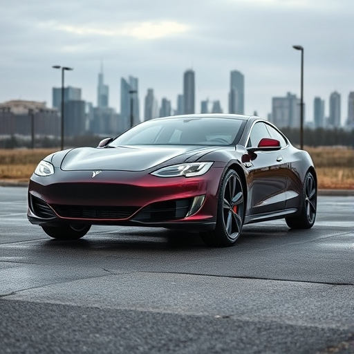

Ходова

Відновлення ходової частини автомобілів Tesla – це запорука вашого комфорту та безпеки. Наші спеціалісти забезпечують якісний ремонт із використанням найкращого обладнання.
- Діагностика стану ходової частини.
- Ремонт підвіски та амортизаторів.
- Заміна кульових опор та втулок.
- Тестування після виконання робіт.
Наша команда має багатий досвід у роботі з ходовими частинами електромобілів Tesla. Ми пропонуємо оперативний ремонт, щоб ваш автомобіль був у чудовій формі навіть за найвищих навантажень.
- Сервіс амортизаторів і підшипників.
- Заміна пружин і стабілізаторів.
- Регулювання розвалу-сходження коліс.
- Гарантія на всі виконані роботи.